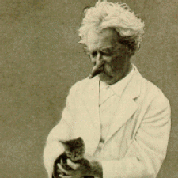

|  | By MT's death improvements in print technology and advertising sophistication made possible much slicker promotional materials. The 14-page pamphlet Harper's put together to promote their 25-volume National Edition of MT's works is particularly elegant, and a good guide to what publishers felt American readers would value most about MT's achievement. This link will take you to Your Mark Twain, as the pamphlet was titled, as its displayed in the "Sam Clemens as Mark Twain" part of the archive. From the pamphlet's homepage, clicking on the image of "MT Incorporated" will bring you back to this part, "Marketing Twain." |